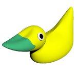

About me

Name: Hannu Antero Kärkkäinen
Age: 20
Nick: Hellenic
MSN: hellenic(at)blankpace.net
My favourites
About me:
I was born in Lieksa. It is a
little place at eastern Finland. I grew up and went to school there.
Currently I'm studying media technology in HAMK University of Applied Sciences on Riihimäki. If everything goes as planned I should graduate on 2011 as engineer of media technology.
Hobbies:
I listen music a lot, rock/metal is my favourite but
I listen almost everything, except punk.
Long time ago I made music myself and played guitar.
I like watching anime and movies. Favourite is fantasy and that kind of stuff, but for those too, scale is pretty large. I don't do much reading but I've read some manga and few fantasy books.
I also do some 3D-modeling. I'm not too good at it (yet),
but I am eager to learn more. You can check some of my renders
at CGI-page.
I've teached myself HTML and CSS, and now I have those at
school too.
I play a little too, mostly role-playing games (RPG). Right now my playing is mostly with Final Fantasy XI MMORPG. I've also tried out World of Warcraft and many many other MMORPGs, but still I find FFXI most interesting.
Unfortunately, sports have smallest part on my hobbies. But still I go swimming every now and then. And at least I walk to school so I get some fresh air that way.